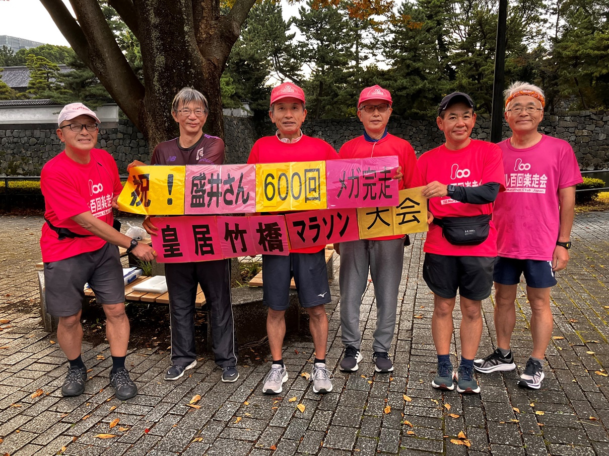
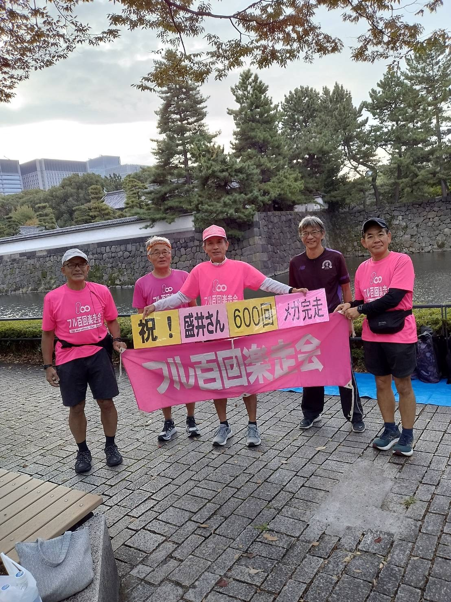
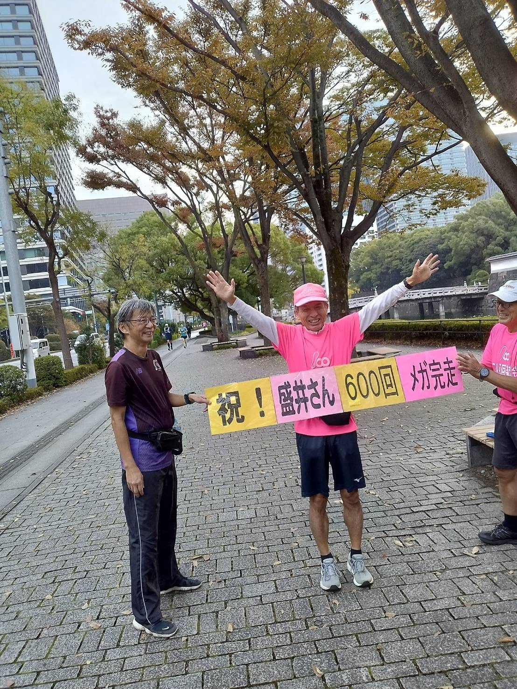

2024-11-16 15:05:26
会員No.848 (神奈川県 64歳)



| No | 開催日 | 大会回数 | 大会名 | 開催地 | 種目(㎞) | 記録 |
|---|---|---|---|---|---|---|
| 501 | 2023-02-24 | 第3回 | 小田原曽我丘陵 | 神奈川 | フル | 7:15:11 |
| 502 | 2023-02-26 | 第1回 | 箱根駅伝1区2区 | 東京都 | フル | 7:49:27 |
| 503 | 2023-03-04 | 2023-3 | 大江戸マラニック | 東京都 | フル | 8:02:14 |
| 504 | 2023-03-05 | 第13回 | 東京顔 | 東京都 | フル | 6:19:44 |
| 505 | 2023-03-11 | 第13回 | 小江戸大江戸 | 埼玉県 | 206km | 35:19:53 |
| 506 | 2023-03-21 | 第26回 | 鎌倉鷹取山 | 神奈川 | フル | 9:11:09 |
| 507 | 2023-03-25 | 2023-3 | 花のお江戸東回り | 東京都 | フル | 8:27:08 |
| 508 | 2023-04-01 | 2023-4 | 山手線1周 | 東京都 | フル | 9:13:55 |
| 509 | 2023-04-02 | 第32回 | 小田原箱根 | 神奈川 | フル | 7:26:15 |
| 510 | 2023-04-08 | 第18回 | 戸田彩湖ウルトラ | 埼玉県 | 71km | 8:00:53 |
| 511 | 2023-04-22 | 第23回 | 真鶴マラニック | 神奈川 | フル | 7:08:27 |
| 512 | 2023-04-23 | 第179回 | ユニバ | 東京都 | フル | 5:42:48 |
| 513 | 2023-05-04 | 2023春 | 橘湾岸スーパーマラニック | 長崎県 | 173km | 28:27:13 |
| 514 | 2023-05-14 | 2023 | 諏訪大社4社巡り | 山梨県 | 100km | 21:32:00 |
| 515 | 2023-05-20 | 第447回 | 皇居竹橋 | 東京都 | フル | 4:49:47 |
| 516 | 2023-05-21 | 2023-5 | 東京ウルトラB試送会 | 東京都 | フル | 8:47:46 |
| 517 | 2023-05-31 | 第635回 | 湘南ウィークリー | 神奈川 | フル | 4:53:27 |
| 518 | 2023-06-14 | 第637回 | 湘南ウィークリー | 神奈川 | フル | 5:14:08 |
| 519 | 2023-06-18 | 第11回 | 干支マラニック(卯フル) | 東京都 | フル | 9:14:02 |
| 520 | 2023-06-25 | 第181回 | ユニバ | 東京都 | フル | 6:24:46 |
| 521 | 2023-07-02 | 第4回 | 山中湖石割山 | 静岡県 | フル | 9:51:07 |
| 522 | 2023-07-06 | 第200回 | 皇居ウィークリー | 東京都 | フル | 5:32:49 |
| 523 | 2023-07-09 | 第33回 | ジョイフル | 神奈川 | フル | 6:13:04 |
| 524 | 2023-07-17 | 第3回 | 表丹沢チャレンジ峠走 | 神奈川 | フル | 8:29:53 |
| 525 | 2023-07-23 | 第29回 | 鎌倉マラニック | 神奈川 | フル | 9:43:19 |
| 526 | 2023-07-30 | 第182回 | ユニバ | 東京都 | フル | 6:11:01 |
| 527 | 2023-08-11 | 第5回 | 山中湖石割山 | 静岡県 | フル | 9:44:24 |
| 528 | 2023-08-16 | 第646回 | 湘南ウィークリー | 神奈川 | フル | 5:58:12 |
| 529 | 2023-08-26 | 2023-8 | 神奈川顔 | 神奈川 | フル | 9:01:20 |
| 530 | 2023-08-27 | 第25回 | 箱根上京 | 神奈川 | フル | 7:30:19 |
| 531 | 2023-09-02 | 第454回 | 皇居竹橋 | 東京都 | フル | 6:02:48 |
| 532 | 2023-09-09 | 2023-9 | 千葉顔 | 千葉県 | フル | 8:58:04 |
| 533 | 2023-09-16 | 第455回 | 皇居竹橋 | 東京都 | フル | 6:05:12 |
| 534 | 2023-09-17 | 第30回 | 鎌倉鷹取山 | 神奈川 | フル | 9:24:31 |
| 535 | 2023-09-18 | 第11回 | 三崎まぐろ(久里浜) | 神奈川 | フル | 8:05:09 |
| 536 | 2023-09-23 | 第26回 | 真鶴マラニック | 神奈川 | フル | 7:24:30 |
| 537 | 2023-09-24 | 第184回 | ユニバ | 東京都 | フル | 5:55:28 |
| 538 | 2023-10-01 | 第10回 | 津南ウルトラ | 新潟県 | 100km | 13:29:28 |
| 539 | 2023-10-09 | 第274回 | 月例白鷺 | 神奈川 | フル | 5:18:01 |
| 540 | 2023-10-14 | 2023-10 | 錦秋試送会 | 埼玉県 | フル | 8:21:09 |
| 541 | 2023-10-21 | 第27回 | 真鶴マラニック | 神奈川 | フル | 7:47:57 |
| 542 | 2023-10-22 | 第185回 | ユニバ | 東京都 | フル | 5:31:05 |
| 543 | 2023-10-28 | 第25回 | 箱根下京 | 神奈川 | フル | 6:14:39 |
| 544 | 2023-11-05 | 2023秋 | 橘湾岸スーパーマラニック | 長崎県 | 276km | 54:37:54 |
| 545 | 2023-11-18 | 第459回 | 皇居竹橋 | 東京都 | フル | 5:31:33 |
| 546 | 2023-11-19 | 第186回 | ユニバ | 東京都 | フル | 5:40:58 |
| 547 | 2023-11-26 | 第4回 | 足柄峠マラニック | 神奈川 | フル | 7:07:13 |
| 548 | 2023-12-03 | 第20回 | 丹沢湖マラニック | 神奈川 | フル | 6:30:12 |
| 549 | 2023-12-09 | 第45回 | 東京五輪 | 東京都 | フル | 8:00:03 |
| 550 | 2023-12-24 | 2023-12 | 大江戸マラニック | 東京都 | フル | 8:08:21 |
| No | 開催日 | 大会回数 | 大会名 | 開催地 | 種目(㎞) | 記録 |
|---|---|---|---|---|---|---|
| 551 | 2023-12-27 | 第664回 | 湘南ウィークリー | 神奈川 | フル | 3:59:06 |
| 552 | 2023-12-28 | 第28回 | 真鶴マラニック | 神奈川 | フル | 7:02:47 |
| 553 | 2024-01-03 | 2024-1 | 埼玉顔 | 埼玉県 | フル | 7:29:49 |
| 554 | 2024-01-06 | 第462回 | 皇居竹橋 | 東京都 | フル | 5:34:32 |
| 555 | 2024-01-13 | 第32回 | 鎌倉鷹取山 | 神奈川 | フル | 7:24:02 |
| 556 | 2024-01-27 | 第13回 | 三崎まぐろ(関東ふれあいの道) | 神奈川 | フル | 7:10:43 |
| 557 | 2024-02-03 | 第464回 | 皇居竹橋 | 東京都 | フル | 5:16:25 |
| 558 | 2024-02-12 | 第33回 | 鎌倉 | 神奈川 | フル | 7:43:41 |
| 559 | 2024-02-17 | 第465回 | 皇居竹橋 | 東京都 | フル | 5:18:10 |
| 560 | 2024-03-13 | 第675回 | 湘南ウィークリー | 神奈川 | フル | 4:48:10 |
| 561 | 2024-03-16 | 第467回 | 皇居竹橋 | 東京都 | フル | 5:10:26 |
| 562 | 2024-03-17 | 2024-3 | 神奈川顔 | 神奈川 | フル | 8:25:09 |
| 563 | 2024-03-24 | 2024-3 | ひとり箱根駅伝復路 | 東京都 | 115 | 20:52:56 |
| 564 | 2024-03-31 | 第1回 | ふくい桜マラソン | 福井県 | フル | 4:52:04 |
| 565 | 2024-04-06 | 第6回 | 小田原曽我丘陵 | 神奈川 | フル | 7:22:28 |
| 566 | 2024-04-07 | 第10回 | ぶらり小田原 | 神奈川 | フル | 7:59:49 |
| 567 | 2024-04-13 | 第19回 | 戸田彩湖ウルトラ | 埼玉県 | 71 | 8:22:17 |
| 568 | 2024-04-21 | 第191回 | ユニバ | 東京都 | フル | 5:43:42 |
| 569 | 2024-04-28 | 第2回 | 箱根駅伝3区4区 | 神奈川 | フル | 7:33:19 |
| 570 | 2024春 | 橘湾岸スーパーマラニック | 長崎県 | 173 | 29:12:13 | |
| 571 | 2024-05-18 | 2024-5 | 東京ウルトラB試送会 | 東京都 | 55 | 8:11:52 |
| 572 | 2024-06-01 | 2024-6 | 東京顔 | 東京都 | フル | 7:12:42 |
| 573 | 2024-06-09 | 第282回 | 月例白鷺 | 神奈川 | フル | 5:19:16 |
| 574 | 2024-06-15 | 第473回 | 皇居竹橋 | 東京都 | フル | 5:40:29 |
| 575 | 2024-06-16 | 第11回 | 大山詣 | 神奈川 | フル | 8:26:33 |
| 576 | 2024-06-23 | 第193回 | ユニバ | 東京都 | フル | 5:49:12 |
| 577 | 2024-06-29 | 2024 | 鳥の旅 前半ハーフ | 山梨県 | 108 | 15:55:24 |
| 578 | 2024-07-06 | 第474回 | 皇居竹橋 | 東京都 | フル | 5:54:18 |
| 579 | 2024-07-07 | 第34回 | ジョイフル | 神奈川 | フル | 5:53:48 |
| 580 | 2024-07-13 | 2024-7 | 神奈川顔 | 神奈川 | フル | 9:14:44 |
| 581 | 2024-07-15 | 第32回 | 真鶴マラニック | 神奈川 | フル | 7:46:21 |
| 582 | 2024-07-21 | 第38回 | 小田原箱根（大雄山） | 神奈川 | フル | 9:33:28 |
| 583 | 2024-07-28 | 2024 | ゼロ富士マイナス | 静岡県 | 60 | 21:14:23 |
| 584 | 2024-08-18 | 第37回 | 鎌倉 | 神奈川 | フル | 9:33:02 |
| 585 | 2024-09-08 | 第33回 | 真鶴マラニック | 神奈川 | フル | 8:03:41 |
| 586 | 2024-09-15 | 第8回 | 秦野犬 | 神奈川 | フル | 8:46:03 |
| 587 | 2024-09-16 | 第40回 | 小田原箱根（大雄山） | 神奈川 | フル | 7:38:25 |
| 588 | 2024-09-21 | 2024-9 | 埼玉顔 | 埼玉県 | フル | 8:06:31 |
| 589 | 2024-09-22 | 2024-9 | 東京顔 | 東京都 | フル | 8:11:27 |
| 590 | 2024-09-24 | 2024-9 | 東京ウルトラA試送会 | 東京都 | フル | 9:44:26 |
| 591 | 2024-09-28 | 第38回 | 鎌倉鷹取山 | 神奈川 | フル | 8:26:20 |
| 592 | 2024-09-29 | 第196回 | ユニバ | 東京都 | フル | 5:33:08 |
| 593 | 2024-10-05 | 2024 | 仙女ウルトラ | 宮城県 | 85 | 12:36:52 |
| 594 | 2024-10-12 | 第12回 | 大山詣 | 神奈川 | フル | 8:10:36 |
| 595 | 2024-10-14 | 第5回 | 金次郎金太郎 | 神奈川 | フル | 8:49:08 |
| 596 | 2024-10-20 | 第197回 | ユニバ | 東京都 | フル | 5:20:36 |
| 597 | 2024-10-27 | 第35回 | ジョイフル | 愛知県 | フル | 5:27:54 |
| 598 | 2024-11-04 | 第12回 | 東京ドリーム | 東京都 | フル | 8:09:24 |
| 599 | 2024-11-09 | 2024-11 | 神奈川顔 | 神奈川 | フル | 8:55:29 |
| 600 | 2024-11-16 | 第483回 | 皇居竹橋 | 東京都 | フル | 4:58:36 |